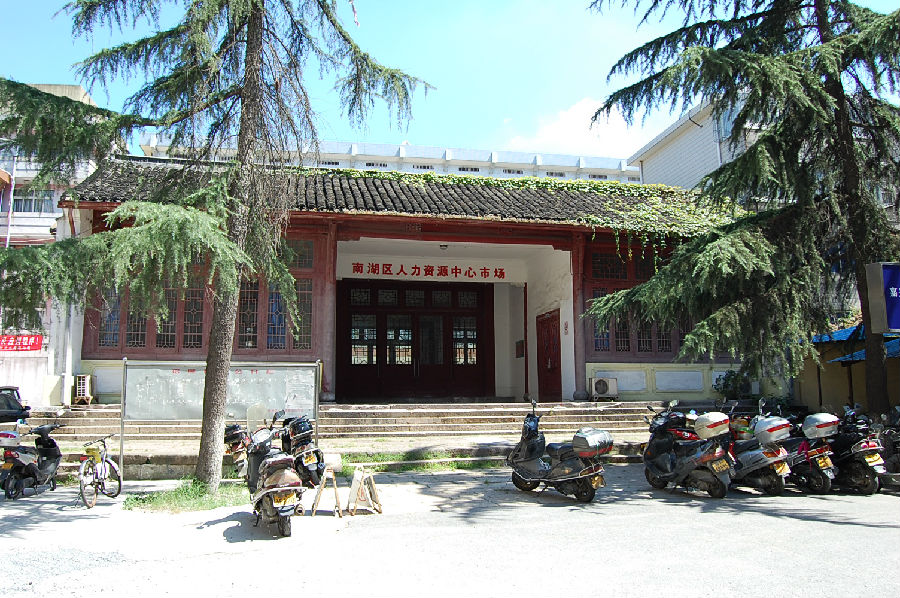

嘉兴市文物保护网 · 市级文物保护点 · 2020-11-09 · 原文

城隍庙大殿位于嘉兴市南湖区建设街道百福弄社区勤俭路611号，据《嘉兴府志》载，城隍庙后晋天福四年（939）立，元明清三代屡次损毁修建，现存大殿为清同治中期乡人重建，建国后曾多次翻修，初为城区人民政府礼堂，后供嘉兴县文化馆办公，现作南湖区人才市场办公用房。城隍庙建筑群仅存大殿，寝宫、东西行宫、厢房等均已拆毁。大殿坐北朝南，砖木结构，五开间平房，占地面积约376平方米，面阔26米，进深14.45米，殿南披有三开间门厅，厅南设有五级石阶。大殿为硬山顶，东西山墙各开四扇拱形窗，内部吊顶，梁架结构无法辨认，无角柱，后檐柱鼓墩造型、图案有典型清末风格。门厅明间墁地用石块错缝铺成，其余已浇成水泥地。城隍庙大殿历史悠久，是传统社会群众精神生活的重要场所，体现了中华传统文化，具有较高的历史价值。1992年公布为嘉兴市文物保护点。